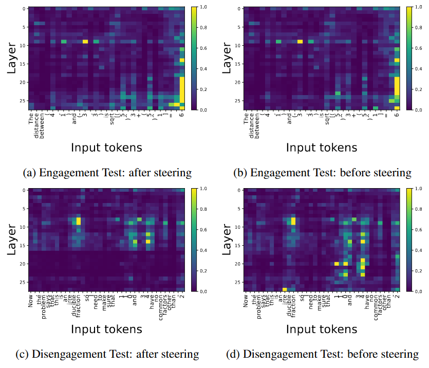

Recent large language models (LLMs) can generate long Chain-of-Thought (CoT)
at test time, enabling them to solve complex tasks. These reasoning traces are often
assumed as a faithful reflection of LLMs’ internal thinking process, and can be
used for monitoring LLMs’ unsafe intentions. However, by analyzing the step-wise causality in CoT on a model's prediction using Average Treatment Effect (ATE),
we design a True Thinking Score (TTS) and show that LLMs often interleave between
(1) true-thinking steps, which
are faithfully used to generate model’s final output.
(2) decorative-thinking steps, which give the appearance of reasoning but have minimal causal impact on
the model’s final output.
We reveal that only a small subset of the total thinking steps that have relatively high
scores and causally drive the final prediction. Furthermore, we identify a TrueThinking
direction in the latent space of LLMs. By steering LLMs' hidden states along or against this direction, we can control
the model to perform or disregard certain CoT steps when computing the result. Fi-
nally, we highlight that self-verification steps in CoT can also be decorative, where
LLMs do not truly check their solution, while steering along the TrueThinking
direction can force internal reasoning over these steps. Overall, our work reveals
that LLMs can verbalize reasoning steps without performing them internally, which
undermines both the efficiency of LLM reasoning and the trustworthiness of CoT.
Figure 1:
We find that reasoning steps in CoT may not always be true thinking but instead function as decorative thinking
where the model internally is not using those steps to compute its answer. Taking self-verification steps as an example
(often called ``Aha moments'' where LLMs rethink their solution with phrases like ``wait''),
we first randomly replace the numerical values in the reasoning steps preceding the ``Aha moment'',
and then re-prompt the model for the answer using the modified CoT. In the left example, despite the correct reasoning in the self-verification steps,
the model disregards them and still outputs the wrong result. In contrast, in the right example, the model truly follows its self-verification and arrives at the correct answer.
True-Thinking Score (TTS)
The True-Thinking Score (TTS) measures how much a reasoning step s contributes causally to the model’s prediction.
By adapting the causality evaluation framework of Average Treatment Effect (ATE), we compare the model’s confidence when the step is kept (X=1) versus when it is replaced by a perturbed version (X=0) (e.g., adding small random offsets to the numbers in the step),
under both intact context (C=1) and perturbed context (C=0). Formally:
Here, X=1 means the model sees the original step, while X=0 means the step is perturbed.
C=1 keeps the steps before s intact as a step may affect the model's prediction jointly with those context steps; C=0 perturbs those context steps to measure the impact of the step on the model's prediction in isolation. The final score is the average of the two ATE scores.
Intuitively, a causally important step should introduce a large change in the model's confidence due to the perturbation we apply. A high TTS indicates the step is truly used by the model; a low TTS suggests it is decorative.
Evaluation Results of Step-wise Causality in CoT
Figure 2. (a) Dataset-level distribution of the TTS score on AIME dataset.
Figure 2. (b) Distribution of ATE(c=1) and ATE(c=0) scores.
Figure 2. (c) Example CoT case and average TTS by step percentile on AIME dataset.
The distribution of TTS is long-tailed.
As shown in Figure 2. (a), most steps have low scores, while only a small fraction achieve very high scores.
On the AIME dataset for Qwen-2.5, the mean is around 0.03: only 6.4% of steps exceed 0.3 and just 2.3% surpass 0.7.
This suggests that only a handful of verbalized steps are truly critical, while many others are decorative.
Moreover, Figure 2. (b) shows that relying only on intact context (c=1) can miss true-thinking steps that become visible under perturbed context (c=0).
Steering experiments confirm that evaluations based solely on intact context can be misleading.
True- and decorative-thinking steps are interleaved.
As seen in Figure 2. (c), steps with high TTS appear throughout the CoT, though later steps tend to score higher on average.
This shows that labeling an entire CoT as “faithful” or “unfaithful” is overly coarse.
Our results also suggest that task difficulty does not guarantee more faithful reasoning:
even on challenging datasets like AIME, many steps remain decorative, mirroring patterns on simpler math tasks.
Self-verification steps can be decorative.
Self-verification (“aha moment”) steps are like “Wait, let me recompute...” where LLMs are trying to refine, check or alternate their solution.
However, TTS reveals that many can be decorative: e.g., 12% of self-verification steps for Qwen-2.5 and 21% for Nemotron score below 0.005.
In such cases, perturbing earlier context flips correct answers to wrong ones, while the self-check step itself contributes little.
This raises concerns about the efficiency of reasoning, since models may appear to self-verify without actually doing so. An example is shown in Figure 3.
More examples with different reasoning behaviors are provided in the Labeled Initial-Step Examples section.
Figure 3: Example of unfaithful self-verification steps (highlighted in blue) where the TTS score
of each step is found smaller than 0.005. Low TTS indicates that those steps are not truly engaged in
computation; rather, these reasoning steps are likely to be decorative and function as an appearance
of self-verification, contributing minimally to the model's final prediction.
True Thinking Can Be Mediated by a Steering Direction
We empirically show that whether an LLM truly reasons through a verbalized step or internally disregards it
can be mediated by a steering direction in latent space. We first compute a
TrueThinking direction per layer by subtracting mean hidden states of high-TTS from low-TTS steps.
For steering at test time, we modify the residual stream for the hidden state of a test step in the example by using
activation addition at a single layer \(l\) to all tokens
in the step.
Causal Tests
Two causal steering tests to validate the identified TrueThinking direction:
üß™ Test A: Engagement Test
Can steering make the model think through a step it normally ignores?
We focus on cases where the model normally ignores the error we inject in the perturbed step and outputs the right answer.
We examine whether steering can make the model think through the perturbed step to follow injected errors and thus, flip the right answer to the wrong answer.
üîÑ Test B: Disengagement Test
Can reverse steering make the model disregard a step internally?
We focus on cases where the model normally thinks through the perturbed step and outputs the wrong answer.
We examine whether steering can make the model disregard the perturbed step and flip the wrong answer to the right answer.
In both cases, flipping from correct→incorrect or incorrect→correct answers after steering
demonstrates that we can causally mediate reasoning engagement.
Table 1: Top-1 flip rate among all layers (%) $\uparrow$ on Engagement Test (ET) and Disengagement Test (DT).
We use flip rate as the metric, measuring how often steering changes the model's initial prediction.
AMC dataset is in-domain evaluation where TrueThinking directions are extracted, while the other two datasets are for out-of-domain evaluation.
Steering Reveals a Latent Signal of Thinking
As shown in Table 1, steering along the TrueThinking direction reliably flips predictions in both causal tests,
while steering in the reverse direction suppresses the model’s use of the target reasoning step.
These effects are far stronger than those of random vectors, confirming that the identified direction
captures a genuine internal representation of reasoning rather than noise.
Experiments across datasets further show that the latent signal controlling step engagement is universal.
A direction extracted on AMC generalizes effectively to MATH and AIME,
revealing a model-internal mechanism of thinking rather than a dataset-specific artifact.
As shown in Figure 4, in the Qwen models, layers 15–22 consistently yield the strongest intervention performance,
suggesting that intermediate layers concentrate latent reasoning.
Figure 4: cross-domain results, where the TrueThinking direction is extracted on AMC and applied to MATH and AIME.
TrueThinking Direction Influences Attention.
Steering along the TrueThinking direction increases a model’s attention to reasoning steps, while steering in the reverse direction decreases it. Example attention maps are shown in Figure 5.
Those results suggest that the TrueThinking direction may control the engagement of reasoning steps by modulating attention to the step.
However, the true-thinking behavior cannot be reproduced by directly scaling attention weights as shown in Table 1. It may reveal a directional reasoning circuit: LLMs decide whether to engage in reasoning before modulating attention, a behavior that cannot be reproduced by directly scaling attention weights.

Figure 5: Normalized attention scores of the step in Engagement Test (ET) and Disengagement Test (DT) before and after steering.
(a–b) Applying the TrueThinking direction to a step increases the model’s attention to it.
(c–d) Applying the reverse TrueThinking direction decreases the model’s attention.
Steering Decorative Self-Verification
Self-verification steps (e.g., “Wait, let me check…”) can appear logical yet remain decorative,
having little influence on the model’s internal reasoning. By steering along the TrueThinking direction during these self-check steps,
we can force the model to truly reason through them and often
restore correct answers that were otherwise lost under perturbations.
Steering along the TrueThinking direction can restore correct answers in up to 52% of initially unfaithful cases.
Labeled Initial-Step Examples
Uncertainty-estimation example
LabelUncertainty-estimation
Context (last two sentences)
Another way is to divide the quadrilateral into two triangles and find the area of each triangle, then add them up. Looking at the points, maybe I can split the quadrilateral along the x-axis
Initial step — Uncertainty-estimation
The points (-1, 0) and (2, 0) are on the x-axis, so the quadrilateral is split into two triangles: one above the x-axis and one below.
Wait, actually, the point (0, 1) is above the x-axis, and (0, -3) is below. So, if I connect (-1, 0) to (0, 1) to (2, 0) to (0, -3) and back to (-1, 0), it's a quadrilateral that crosses over the x-axis.
Alternatively, maybe I can split it into two triangles: one with vertices (-1, 0), (0, 1), (2, 0) and another with vertices (2, 0), (0, -3), (-1, 0). Wait, but that might not cover the entire quadrilateral.
Alternatively, perhaps split it into triangles with a common diagonal. Let me see.
If I connect (0, 1) to (0, -3), that's a vertical line along the y-axis. Then, the quadrilateral is split into two parts: one on the left side of the y-axis and one on the right.
But actually, the points are (-1, 0), (0, 1), (2, 0), (0, -3)
Uncertainty-estimation example
LabelUncertainty-estimation
Context (last two sentences)
Looking at the points, maybe I can split the quadrilateral along the x-axis. The points (-1, 0) and (2, 0) are on the x-axis, so the quadrilateral is split into two triangles: one above the x-axis and one below
Initial step — Uncertainty-estimation
Wait, actually, the point (0, 1) is above the x-axis, and (0, -3) is below. So, if I connect (-1, 0) to (0, 1) to (2, 0) to (0, -3) and back to (-1, 0), it's a quadrilateral that crosses over the x-axis.
Alternatively, maybe I can split it into two triangles: one with vertices (-1, 0), (0, 1), (2, 0) and another with vertices (2, 0), (0, -3), (-1, 0). Wait, but that might not cover the entire quadrilateral.
Alternatively, perhaps split it into triangles with a common diagonal. Let me see.
If I connect (0, 1) to (0, -3), that's a vertical line along the y-axis. Then, the quadrilateral is split into two parts: one on the left side of the y-axis and one on the right.
But actually, the points are (-1, 0), (0, 1), (2, 0), (0, -3)
Backtracking example
LabelBacktracking
Context (last two sentences)
So, putting it all together, 20% of 50% of 80 is 8. That seems correct, but let me verify it another way to make sure I didn't make a mistake
Initial step — Backtracking
Another approach is to multiply all the percentages together first and then apply them to 80. So, 20% is 0. 2, and 50% is 0. 5. Multiplying those together: 0. 2 * 0. 5 = 0. 1
Adding-knowledge example
LabelAdding-knowledge
Context (last two sentences)
Wait, but that might not be accurate. Alternatively, maybe split the quadrilateral into two triangles by drawing a diagonal from (-1, 0) to (2, 0)
Initial step — Adding-knowledge
Then, the quadrilateral is split into two triangles: one with vertices (-1, 0), (0, 1), (2, 0) and another with vertices (-1, 0), (2, 0), (0, -3). Let me calculate the area of each triangle and add them.
First triangle: (-1, 0), (0, 1), (2, 0)
Using the formula for the area of a triangle with coordinates: 1/2 |x1(y2 - y3) + x2(y3 - y1) + x3(y1 - y2)|
Plugging in the points:
x1 = -1, y1 = 0
x2 = 0, y2 = 1
x3 = 2, y3 = 0
So,
Area = 1/2 | (-1)(1 - 0) + 0(0 - 0) + 2(0 - 1) |
= 1/2 | (-1)(1) + 0 + 2(-1) |
= 1/2 | -1 + 0 - 2 |
= 1/2 | -3 | = 1/2 * 3 = 1
Adding-knowledge example
LabelAdding-knowledge
Context (last two sentences)
Let me calculate the area of each triangle and add them. First triangle: (-1, 0), (0, 1), (2, 0)
Using the formula for the area of a triangle with coordinates: 1/2 |x1(y2 - y3) + x2(y3 - y1) + x3(y1 - y2)|
Plugging in the points:
x1 = -1, y1 = 0
x2 = 0, y2 = 1
x3 = 2, y3 = 0
So,
Area = 1/2 | (-1)(1 - 0) + 0(0 - 0) + 2(0 - 1) |
= 1/2 | (-1)(1) + 0 + 2(-1) |
= 1/2 | -1 + 0 - 2 |
= 1/2 | -3 | = 1/2 * 3 = 1.5
Initial step — Adding-knowledge
Second triangle: (-1, 0), (2, 0), (0, -3)
Again, using the same formula:
x1 = -1, y1 = 0
x2 = 2, y2 = 0
x3 = 0, y3 = -3
Area = 1/2 | (-1)(0 - (-3)) + 2((-3) - 0) + 0(0 - 0) |
= 1/2 | (-1)(3) + 2(-3) + 0 |
= 1/2 | -3 -6 + 0 |
= 1/2 | -9 | = 1/2 * 9 = 4. 5
Adding both areas: 1. 5 + 4. 5 = 6
Okay, so that's the same result as before
BibTeX
@article{zhao2025trueThinking,
title={Can Aha Moments Be Fake? Identifying True and Decorative Thinking Steps in Chain-of-Thought},
author={Zhao, Jiachen and Sun, Yiyou and Shi, Weiyan and Song, Dawn},
journal={arXiv preprint arXiv:xxxx.xxxxx},
year={2025}
}